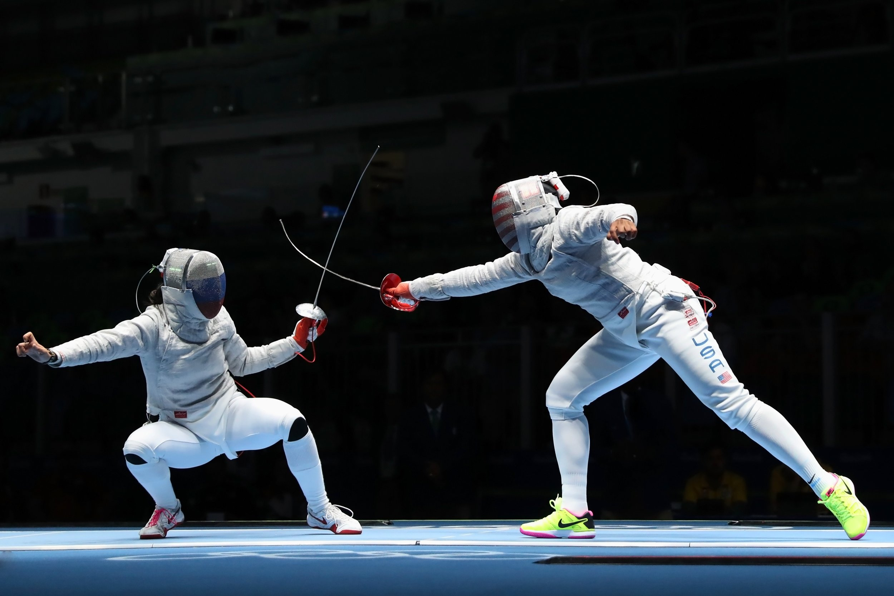
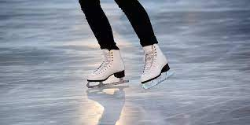
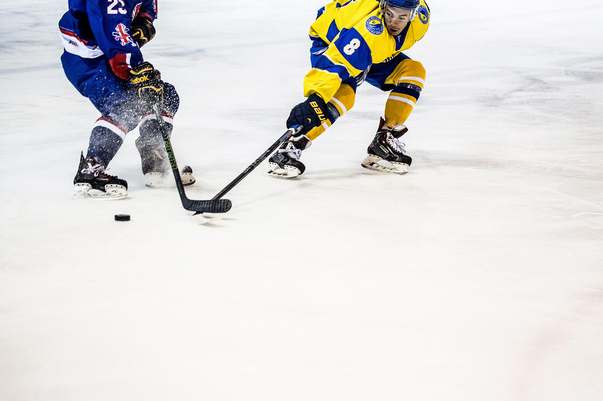
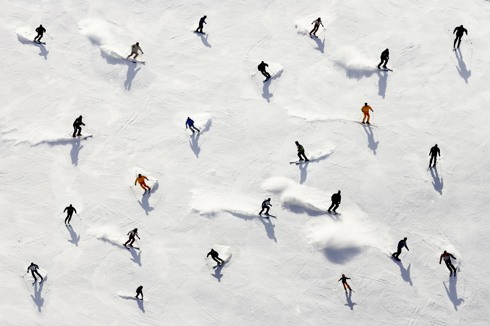

Cultural Sports
Ivrea
Fencing
The sport of fencing, or sword fighting, has a long history in Ivrea. Fencing is a traditional sport that requires skill, agility, and precision. It is often practiced as a competitive sport, with tournaments and championships held regularly in the region. Fencing has deep cultural significance in Ivrea and is celebrated as an important part of the city's heritage.
Ice skating
In addition to fencing, ice skating is also popular in Ivrea. The city has several ice skating places where locals and visitors can enjoy gliding across the ice. Ice skating is a fun activity that brings people together and adds to the vibrant cultural scene of Ivrea.
Salzburg
Hockey
Hockey is a popular sport in Salzburg, with a strong tradition. Salzburg is home to many hockey clubs and teams, and the sport is widely played and followed throughout the region. Hockey matches and tournaments are held regularly, attracting players and spectators. The sport of hockey is an integral part of the cultural identity of Salzburg and is cherished by the local community.
Skiing
Salzburg is renowned for its skiing opportunities. With its close proximity to the Alps, the city attracts skiers from around the world. There are numerous ski resorts near Salzburg offering a variety of slopes for skiers of all levels. Skiing is not just a sport in Salzburg, but a way of life, deeply ingrained in the region's culture and history.
